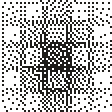
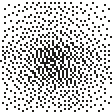
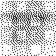
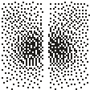

 Deriving Benchmarking Datasets from Long-Form Recordings: Challenges and Opportunities K. K. Sheth, L. Borst, T. Kunze, M. Lavechin, O. Räsänen, S. Tsuji, L. Peurey, A. Bourrée, A. Cristia Interspeech 2026 preprint
Context-aware child-directed speech detection from long-form recordings T. Charlot, T. Kunze, K. K. Sheth, A. Cristia, M. Lavechin Interspeech 2026 code preprint
 BabyHuBERT: Multilingual Self-Supervised Learning for Segmenting Speakers in Child-Centered Long-Form Recordings T. Charlot, T. Kunze, M. Poli, A. Cristia, E. Dupoux and M. Lavechin Interspeech 2026 code preprint
 Challenges in Automated Processing of Speech from Child Wearables: The Case of Voice Type Classifier T. Kunze, M. Metais, H. Titeux, L. Elbert, J. Coffey, E. Dupoux, A. Cristia and M. Lavechin Interspeech 2025 paper code preprint poster
Fifteen Years of Child-Centered Long-Form Recordings: Promises, Resources, and Remaining Challenges to Validity L. Peurey, M. Lavechin, T. Kunze, M. Khentout, L. Gautheron, E. Dupoux and A. Cristia Interspeech 2025 paper preprint
Searching Search Spaces: Meta-evolving a Geometric Encoding for Neural Networks T. Kunze, P. Templier, and D. Wilson IEEE CEC 2024 paper code preprint
 Analogies between sentences: Theoretical aspects — preliminary experiments S. Afantenos, T. Kunze, S. Lim, H. Prade and G. Richard ECSQARU 2021 paper code